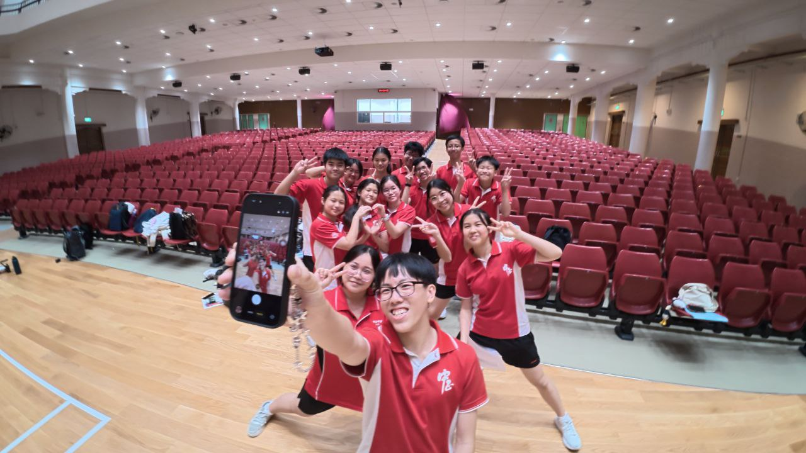
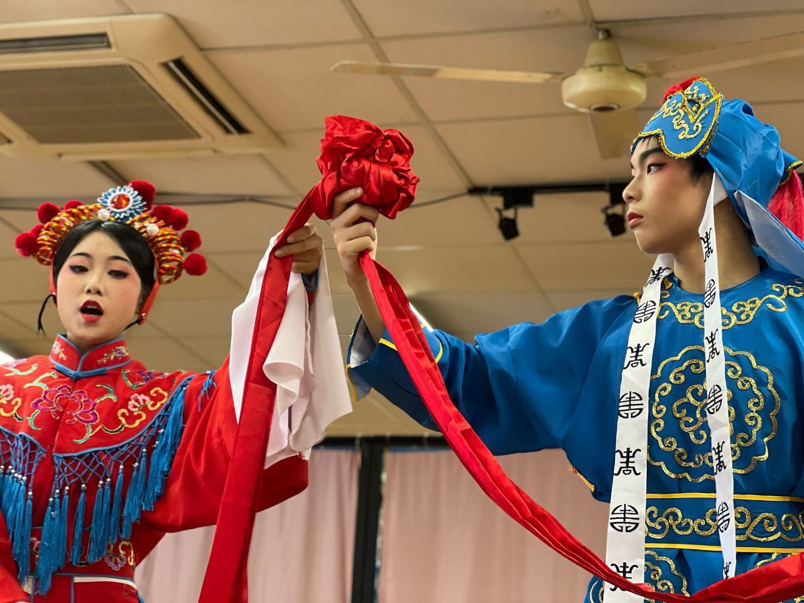
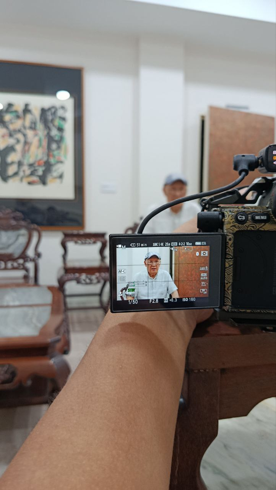
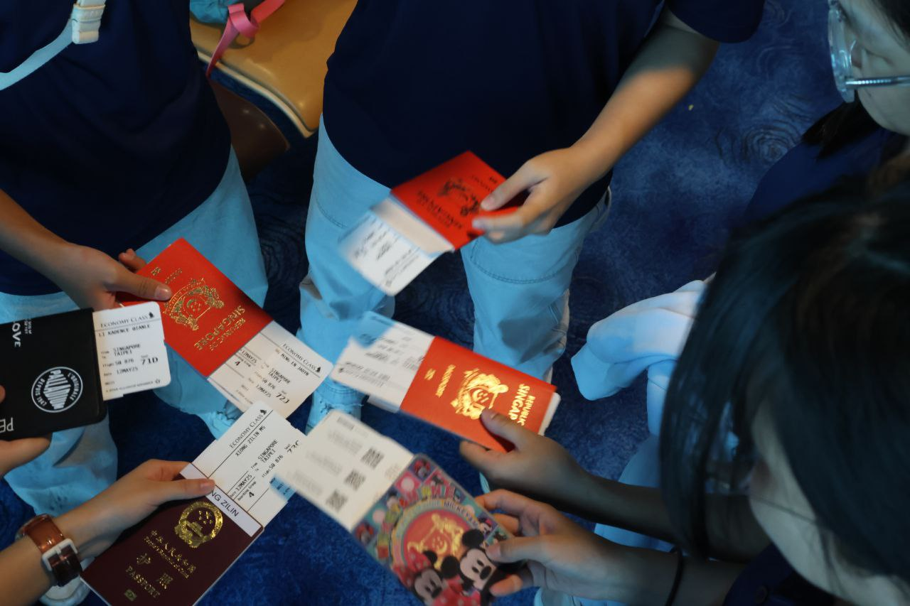

Chinese Drama
华文话剧 · SYF · ARTFEST · Four Years in Production · 四年幕后与台前
Four years of involvement in the Chinese Drama CCA at Chung Cheng High School — beginning as a general member, progressing to props core crew, taking on the Quartermaster role, and performing in the SYF Arts Presentation. Alongside the performing arts commitments, two initiatives outside the standard CCA scope: building a resource website to preserve institutional knowledge, and mentoring a Secondary 1 junior through their first year in the club.
Production work teaches a particular kind of discipline. Props don't organise themselves, cues don't coordinate themselves, and the five minutes before curtain always produce problems that weren't in the script. Four years of that is a reliable education.
华文话剧的幕后工作教会了我一件事：一场演出能不能顺利，最终取决于那些没人注意到的准备工作是否到位。四年，从观众到幕后，再到台前。
SYF 2025 Arts Presentation
全国艺术节呈献 · The highest-stakes performance in the school performing arts calendar · 校园表演艺术年度最高规格呈献

The Singapore Youth Festival Arts Presentation is the national biennial showcase for school performing arts CCAs — the production that every year of work in the club is building toward. Participation in SYF requires sustained preparation: months of rehearsal, blocking refinements, technical run-throughs, and the kind of close attention to detail that distinguishes a performance that holds together from one that doesn't.
Contributed to the production from the ground level: props management, stage logistics, and real-time problem resolution during technical rehearsals and the performance itself. Backstage responsibilities during SYF are not minor — any failure in props, set movement, or logistics has immediate and visible consequences for the performance. The preparation work that goes into preventing those failures is substantial and largely invisible.
Performing in SYF also marked the culmination of four years of increasing involvement in the CCA — from observer to core crew to the stage itself.
SYF是中正华文话剧每两年最重要的一次呈献。四年的幕后积累，在这一次走上了台前。



Joined the ARTFEST props core crew from Secondary 2, taking on progressively more responsibility in each production cycle. The Quartermaster role formalised that progression: responsibility for all physical resources — inventory management, storage organisation, deployment logistics during rehearsals and performances, and accountability for every item that moves between the props room and the stage.
Props work is production work at its most concrete. The Quartermaster has to know the exact location of every set piece, understand the timing of every scene transition, anticipate which items will be needed simultaneously, and have contingency plans when items are not where they should be. That level of operational knowledge — knowing the production from a logistics perspective — offers a fundamentally different understanding of how a show is constructed than the perspective from rehearsal alone.
ARTFEST 2024 involved multiple performance pieces and required coordinating props logistics across concurrent production timelines. The experience refined both the physical management skills and the broader capacity for operational planning under event conditions.
道具管理员的工作是：演出当天，台上的每一件东西都在它应该在的地方，在它应该到的时间到位。这件事比听起来要复杂得多。
Building for the Next Batch
资源网站 · 学弟带教 · 制度性的知识传承 · Passing knowledge forward
Built a dedicated resource website for the Chinese Drama CCA, designed to preserve institutional knowledge across cohort transitions. Content includes: scripts from previous productions, detailed production experience writeups, music libraries, Q&A sections addressing common challenges, and budget records from past events.
The motivation was straightforward: a significant amount of operational knowledge accumulated by each batch — how things actually work, what problems typically arise, what solutions have been tried — tends to leave with that batch when they graduate. The website was an attempt to make that knowledge transferable, so subsequent batches can build on what was learned rather than rediscovering the same things from scratch.
Technology used: web development from scratch, content management, and ongoing maintenance. The site represents a commitment to the CCA that extends beyond individual membership tenure.
建这个网站的原因很简单：让学弟妹们不必从头摸索那些我们已经学到的东西。
Mentored a Secondary 1 junior through their first year in the CCA — guiding them through task responsibilities, explaining production processes, and providing feedback on their work. The mentoring relationship required calibrating the approach to the individual: explaining without being condescending, holding to standards without being discouraging, and distinguishing between mistakes that need correction and mistakes that are part of learning.
This was the first experience of being directly accountable for another person's development within a programme, rather than for one's own performance. The distinction matters: being responsible for someone else's success requires a different set of attentions than being responsible for your own.
The experience informed how leadership responsibilities are approached more broadly — particularly the CLEP Vice Chair role, where coordination of others is central to the work.
对另一个人的成长负责，和对自己的表现负责，是两件完全不同的事。带学弟是第一次真正意义上承担前者。
中一入组。中二进入道具核心。中三担任道具管理员，同时建了资源网站，带了学弟。中四站上SYF的舞台。每一年的角色都比上一年承担了更多实质性的责任，而不只是年资的自然积累。
Joined in Sec 1. Props core crew by Sec 2. Quartermaster by Sec 3 — plus the resource website and junior mentoring. SYF stage in Sec 4. Each year involved a genuine increase in substantive responsibility, not just seniority. The progression was earned rather than automatic, and the CCA's contribution to practical production skills, operational thinking, and leadership development has been consistent across the full four years.